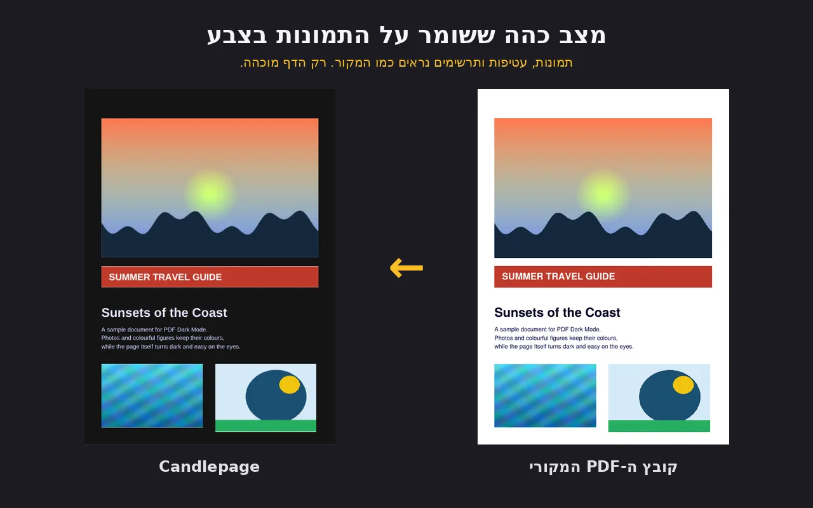
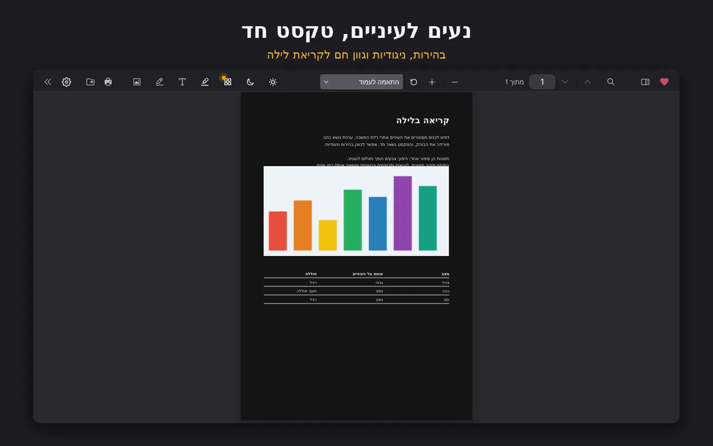
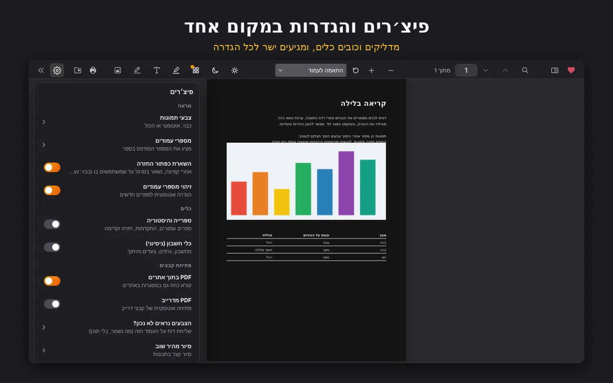
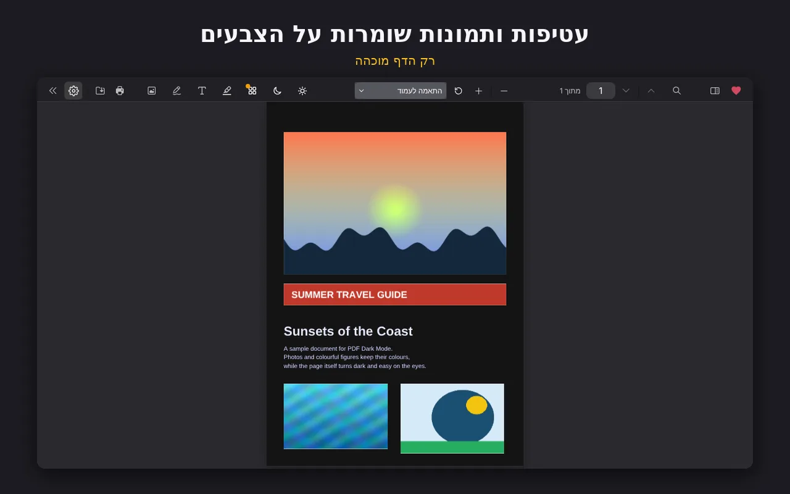

מצב כהה ל-PDF בכרום
PDF כהה. התמונות נשארות בצבעים שלהן.
רוב הכלים למצב כהה הופכים כל פיקסל, ולכן תמונות ותרשימים נראים כמו נגטיב. Candlepage מחשיך את הדף ומשאיר את התמונות כמו שהן, כדי שתוכלו ללמוד בשתיים בלילה בלי לכווץ את העיניים.




בנוי לשעות קריאה ארוכות
עובד על כל PDF
פותחים PDF מאתר או מהמחשב וקוראים אותו במצב כהה.
תמונות נשארות אמיתיות
תמונות, גרפים וכריכות שומרים על הצבעים המקוריים במקום להפוך לנגטיב.
עברית ואנגלית
הממשק עובד בשתי השפות, כולל פריסה מימין לשמאל.
נקי ומינימלי
מציג פשוט בסגנון iOS שלא מפריע לכם בזמן הקריאה.
תוספות, רק כשאתם רוצים
אלה כבויים כברירת מחדל. מפעילים אותם בהגדרות.
- כלי מתמטיקהניסיוני
- ספרייה והיסטוריית קריאה
- Google Drive
שאלות נפוצות
איך מפעילים מצב כהה על קבצי PDF מהמחשב?
כרום חוסם תוספים מקבצים מקומיים כברירת מחדל. פותחים chrome://extensions, מוצאים את Candlepage, לוחצים על פרטים ומפעילים את Allow access to file URLs. מאותו רגע גם קבצי PDF מהמחשב נפתחים במצב כהה.
האם תמונות ותרשימים הופכים לנגטיב?
לא. Candlepage מחשיך את הדף ומשאיר תמונות, תרשימים וכריכות בצבעים המקוריים.
האם Candlepage חינמי?
כן, זה תוסף חינמי לכרום. אם הוא עוזר לכם, אפשר לתמוך בפרויקט ב-Ko-fi.
מה לגבי הפרטיות שלי?
דיווחי תקלות אנונימיים הם אופציונליים ונשלחים רק אם אתם מסכימים. מדיניות הפרטיות למטה מסבירה בדיוק מה נאסף.
לקרוא בנוחות כבר הלילה
Candlepage הוא פרויקט של אדם אחד. מצאתם באג או יש לכם רעיון? אני קורא כל הודעה.
דיווח על באגים: ben.meitav.work@gmail.com